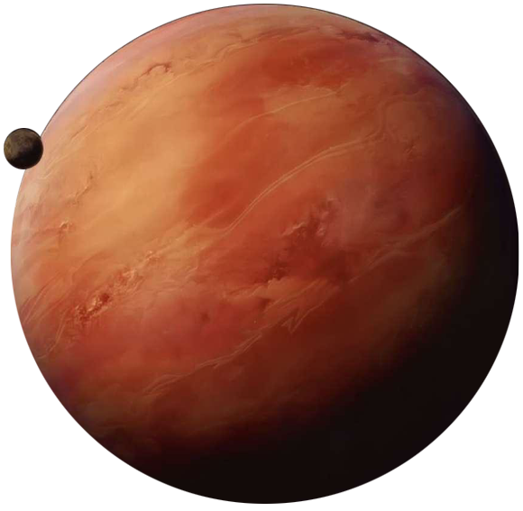

Bespin
bespin
Population: 6 Million
Terrain: Gas Clouds
Orbital Metrics: 5,110 days per year / 12 hours per day
Languages: Basic
Major Cities: Cloud City (capital), Tibannopolis (semi-abandoned), Ugnaught Surface
Areas of Interest: Life Zone
Major Exports: Tourism, Tibanna gas, Cloud cars
Major Imports: Consumables, Industrial goods
Astronavigation Data
Trade Routes: Corellian Trade Spine, Corellian Run
In a universe full of rarities, Bespin still manages to stand apart. With no livable surface area, gas giants are rarely worth colonizing. Bespin, however, contains a resource so valuable it makes any expense in colonization viable: Tibanna gas. Tibanna gas serves several purposes in galactic technology. One refined version is a potent hyperdrive coolant, while another version can be used with weaponry.
Blaster packs are filled with compressed gases which, when excited, emit a bolt of searing energy. Of the half-dozen gases available on the market, spin- sealed Tibanna gas is one of the most powerful (and expensive), as it quadruples energy output of a blaster pack. Safest when used in heavy weapons, spin-sealed Tibanna gas still finds its way into personal weaponry.
This fortune in Bespin's clouds led to a host of repulsorlift cities inhabiting the "Life Zone," a band of breathable atmosphere 30 kilometers deep. The zone is also home to immense beldons which graze on clouds of phosphorescent algae, packs of velkers which prey on the beldons, and rawwk bats which scavenge on anything that remains.
Bespin's capital, Cloud City, was constructed by the entrepreneur Ecclessis Figg, who planned to conceal his illegal mining operations of Tibanna for blaster weapons with a veneer of legitimate business. To this end he touted his city as a luxury resort and coolant mining operation. Years later, under control of Baron Administrator Lando Calrissian, the "cover" has become reality; tourism is one of Cloud City's major industries. Under Calrissian's rule, Cloud City has risen in prosperity to remain as Bespin's undisputed capital.
Although Cloud City is Bespin's largest city, there are communities making credits mining Tibanna gas. The largest, Tibannopolis has seen a reversal in mining fortunes in the last decades. Now, mostly abandoned, it drifts aimlessly. One of the other floating communities of note is the so-called "Ugnaught Surface," a floating platform whose surface is landscaped to mimic the surface of the Ugnaughts' homeworld of Gentes.
Cloud City
Designed by an Alderaanian architect, Cloud City conceals its mining infrastructure with an airy elegance that matches the surrounding atmosphere. For many, there is no more romantic getaway than a week in the clouds. The top 50 levels of the city house resorts, spas, casinos, shopping centers, theaters, chapels - anything that pleases the heart and relaxes the mind. The city's mid-section consists of the facilities for Bespin Motors, and also Port City, where the locals work and live. At the bottom levels near the main repulsor shaft, a dedicated workforce of humans, Ugnaughts and Lutrillians fly out in trawlers to scoop Tibanna from the atmosphere, then return to package the mined gas for export.